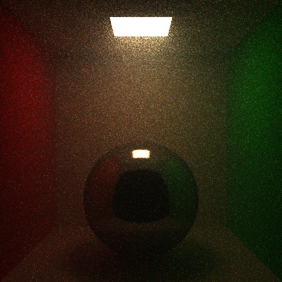

Christos Enotiadis · Spring 2026
Light shafts through a window into a foggy room. 800x800, 4096spp, homogeneous scattering medium with sigma_a = 0.02, sigma_s = 0.075, g = 0.45. Full scene description further down.
Extending my HW1-4 path tracer with participating media. Hero image target is a scene with visible light shafts through fog or haze, e.g. a window beaming into a dusty interior.
First stage of volumetric path tracing is working. A global homogeneous absorbing medium with Beer-Lambert attenuation. About 30 lines added across Scene.h, Raytracer.h, and Parser.h. Existing scenes without a medium specified render identically to HW4.
What was added:
The three images below show the same cornell box rendered with identical MIS path tracer settings, varying only the medium parameters.

Baseline (no medium). HW4 path tracer output for reference.

Light fog. sigma_a = (0.10, 0.15, 0.25), sigma_s = 0.

Heavy fog. sigma_a = (0.25, 0.35, 0.50), sigma_s = 0.
The warm color cast in the fogged renders is the expected behavior. Blue is absorbed most and red least (sigma_a_b > sigma_a_g > sigma_a_r), so what reaches the camera is biased toward warm wavelengths. Depth-dependent attenuation is visible: the back wall and the sphere are noticeably dimmer than surfaces close to the camera, and the soft floor shadow under the sphere takes on a warm tint because that bounce light travels farther through the medium before reaching the camera.
This is absorption only. No scattering events, no in-scattering, no phase function. With sigma_s = 0 the renderer is physically correct (no missing in-scattering term to compensate for).
Full volumetric path tracing is in: homogeneous scattering media with free flight sampling, the Henyey-Greenstein phase function with importance sampling, and MIS between phase function sampling and NEE at scattering vertices. The absorption only path from the milestone is kept as a fallback when sigma_s = 0, so all earlier scenes render identically.
What was added since the milestone:
The two cornell renders below show in-scattering working, same box as the milestone images but with sigma_a = 0.05 and sigma_s = (0.30, 0.40, 0.50). The visible glow extending below the light is light scattered toward the camera in mid air, which the milestone absorption renders could not produce.

Isotropic scattering, g = 0.

Forward scattering, g = 0.5. The glow under the light is brighter and more directional than the isotropic case because forward scattering keeps redirected light moving roughly along its original direction, down and toward the camera.
The hero is a dark room with a four pane window in one wall and a small, very bright quad light far outside (about 25 units away, intensity in the thousands). The distance matters: shaft definition comes from the angular size of the source, a big close light gives every shadow edge a huge penumbra and the beam turns to mush. Small and far away with intensity scaled up by distance squared keeps the mullion shadows crisp inside the beam. The medium is sigma_a = 0.02, sigma_s = 0.075, g = 0.45, picked so the mean free path is on the order of the room size and the beam stays visible from a side-on camera (high g values dim the beam at large scatter angles). A GGX sphere sits in the beam landing zone. The geometry is emitted by a small python script (scenes/gen_hero.py) that takes room, window, light, and camera parameters, mostly so iterating on the composition was editing three numbers instead of rederiving vertex coordinates.
The long streak behind the sphere is its shadow through the fog, which I think is the best volumetric detail in the image: the fog behind the sphere receives no direct light so there is no in-scattering there, and the darkness is visible in mid air.
Volumetric scenes with small bright lights are firefly territory. Rare paths scatter in the fog and then connect to the light with a tiny pdf, dumping a lot of energy into one sample. These outliers converge much slower than regular variance, going from 1024spp to 4096spp visibly reduced the speckle but did not eliminate it.

1024spp for comparison. The remaining speckle in the final 4096spp render could be removed with per sample radiance clamping, which is standard practice in production renderers, but it introduces bias and I preferred keeping the estimator unbiased and letting the grain read as film grain.
Heterogeneous media (delta tracking, ratio tracking) did not happen, as scoped in the proposal it was conditional on the homogeneous path landing early. The time went into the MIS correctness and the hero scene instead.